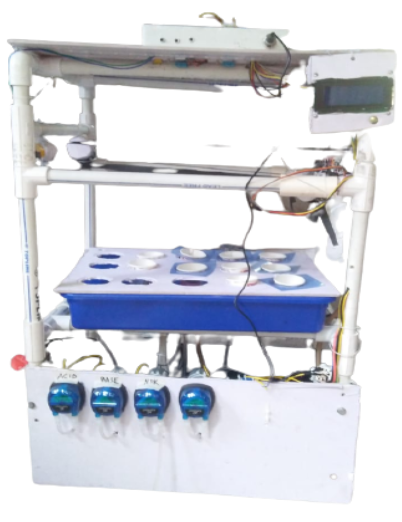

Robotics Assisted Farming
The Robotics Assisted Farming Model enables the usage of aeroponics as well as hydroponics with the assistance of automation and artificial intelligence. The whole process is made successful with the usage of ATMEGA2560 & Broadcom BCM2711 & (SoC) ESP8266 Microcontrollers and many more sensors.

Key Features
- Dual Systems: Enables the usage of hydroponics by using centrifugal pumps and a reliable water drainage system, alongside an aeroponic system equipped with a water mist creating mechanism.
- Auto Seeding: Utilizes an x and y axis moving mechanism with BO motors with accuracy more than 85%.
- Plant Disease Detection: Uses a Convolutional Neural Network and Normalized Difference Vegetation index in Python with OPENCV and TensorFlow to identify plant diseases.
- Auto Nutritional Maintenance: Equipped with ph, tds, humidity and temperature sensors to identify and provide nutrition at an equilibrium state using peristaltic pumps.
- Mobile Based UI: A user-friendly mobile application provides real-time information, live farm footage, and suggestive measures.
System Environments & Operations
The system is highly versatile and targeted for use in Agricultural Farms, Farming Research Labs, and at Home. To maintain optimal growing conditions, it includes an Inbuilt Lighting System and an Auto Cooling System, while utilizing a dedicated Database to securely store all operational data.
Technical Specifications
- Microcontrollers: Atmega 2560, Esp8266 (SOC), BSM2711.
- Sensors: DS18B20, DHT11, LIQUID PH SENSOR, TDS SENSOR.
- Dimensions: Height 28.5 inch, Width 15 inch, Length 20 inch.
Connectivity & Peripherals
- Network: Fully supported via WIFI 802.11N IEEE.
- Actuators & Hardware: The model operates using a built-in camera, peristaltic pumps, BO motors, centrifugal pumps, and servo motors.
Control Interface
The manual control board consists of six primary buttons for quick system overrides and mode switching:
- Button 1: Reset
- Button 2: Aeroponics Mode
- Button 3: Hydroponics Mode
- Button 4: Sowing Mode
- Button 5: Plant 1 (Low Nutri)
- Button 6: Plant 2 (High Nutri)
For more detailed technical data, pinouts, and hardware configurations, please refer to the Robotics- Assisted-Farming-datasheet.pdf.